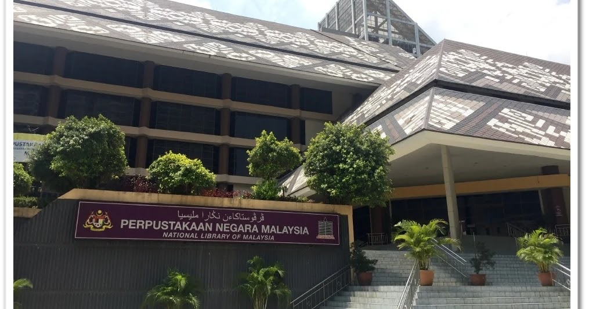
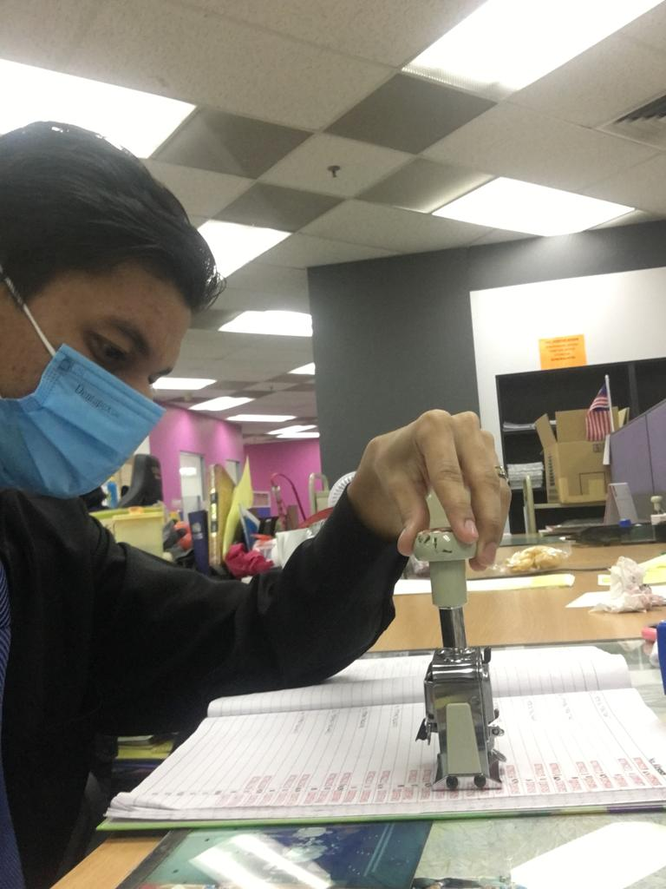
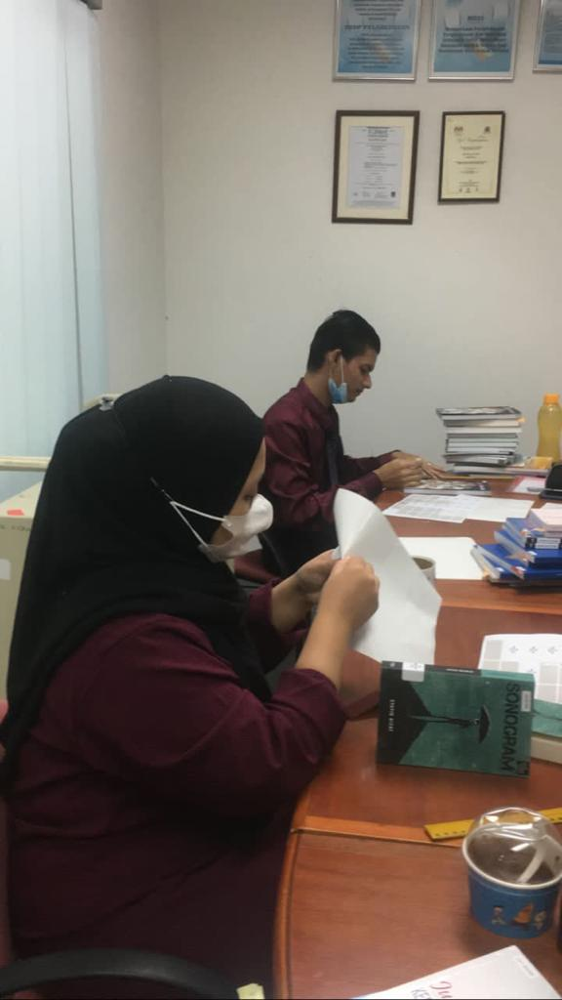
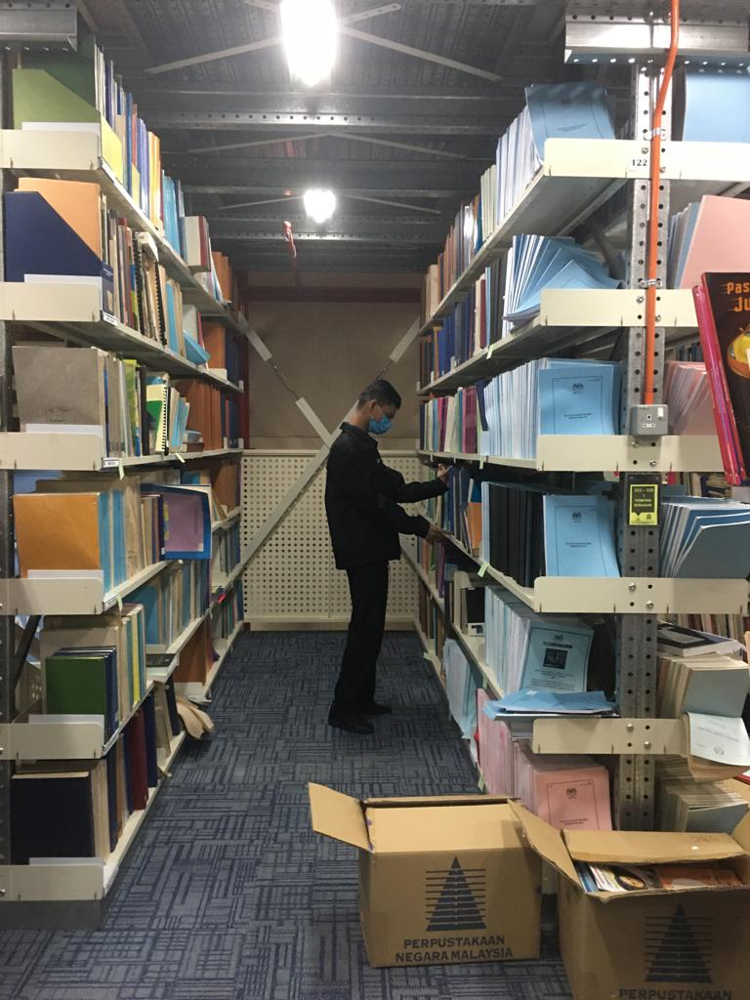
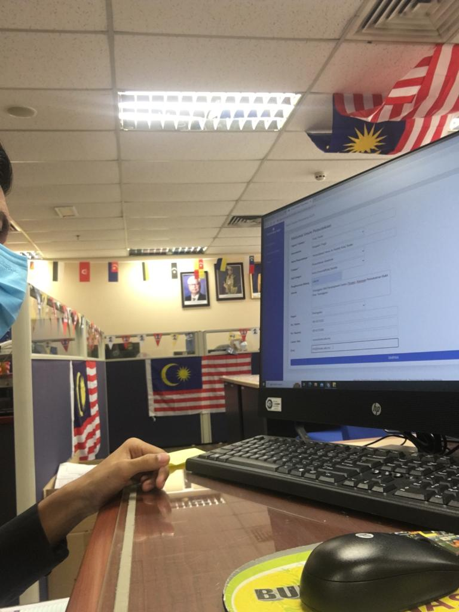

<html>
<head>
<title>experience</title>
</head>
<body>
<a href="index.html"></a>       
<a href="biodata.html"></a>
<a href="education.html"></a>
<a href="experience.html"></a>
<a href="family.html"></a>
<a href="gallery.html"></a>
<body bgcolor="Gray">
</body>
</html>
<center><h1 style="color:white;>My Experience Working At Perpustakaan Negara Malaysia</h1></center>
<center></center>
<br>
<br>
<pre><b style="color:white;">  15 August 2022</b></pre>
<pre><b style="color:white;">  Bahagian Pembangunan Modal Insan</b></pre>
<blockquote><pre style="color:white;">I start my day by going to 5th floor and punch in my card before enter inside the department.
I was instructed to go see my supervisor which is Puan Norhazliza Binti Hj.Mohd Razali. At  first,  she  were
briefing about industrial training at Bahagian Pembangunan Modal Insan(BPMI). She was briefing about  what  I 
need to do inside that department and where I will go after I done my job in that department. So, I began  my 
work inside that department by doing task given by my supervisor which is Record Latest Statistic on  Monthly
Programmed using Microsoft Excel.Then followed by designing posters for the event that the Library  need   to 
launch at that time.The next day, I go to the same  department  and  start a  day  with  discussion  with  my 
supervisor on my daily report.Because in my training, I need to provide a  report to  show my  lecturer  when 
enter the next semester.So, the day goes on by doing another similar task which is designing another  posters
for the events. You need to know in National Library, they need to create many events to make people come and 
visit the library, so all my task at that time is designing posters and make a data entry.Another day goes by,
but this time I need to explain to my supervisor about Training Need Analysis(TNA).TNA  is  really  important
especially for librarians.Friday come along and this is the actually my last day at (BPMI),I start my day with 
contact people from various agencies to make a confirmation if they can come and join us in TOT  event  or not.
In that evening, I have to create a form for people who cannot join the event and they need to  show a  reason
for not attending the event.</pre></blockquote>
<br>
<br>
<pre><b style="color:white;">  22 August 2022 (Week 2)</b></pre>
<pre><b style="color:white;">  Pusat Bibliografi Negara</b></pre>
<blockquote><pre style="color:white;">A week goes by and this week I need to work at a different  department  which is Bibliography
Center. At first,I go to see Puan Azura Ahmad for the briefing because she is my supervisor at that department.
In that briefing, I was tell and shown how all the work is done by all the workers in that department.She also
tell me that Bibliography section is actually quite tricky if you not focus when  doing  your  work because in
this section you need to record more than 200 plus books, so if you are not focus, the information record  can
be false and can create many problems later in another department. In that record you need to include the name 
of the author,place of that book is publish, the call number of that book, content inside that book  and  many 
other things that important for users to know when they want to borrow and buy a books. After that, I  need to 
make a confirmation list for book receipt. This is actually important because you need to  check all the books 
received from National Library is received in a perfect condition. It  is  actually  a  challenging  day but I 
somehow get through that day just find. The next day, I was given a briefing about what is Monograph,  how  to 
use RFID and how to make indexing.I was teach how to use RFID.RFID is actually a scanner that you need to scan 
at the back of the books and it will automatically saved the information inside that books.  After that, I was 
told to do a index. When making index you need to choose only the important part of  that books,  magazines or
newspaper such as the title of the story, what contents inside that materials and who  is the  author of  that 
story. Then mark it page by page using sticky note so the other workers can easilly write down the information 
inside the system. I was in this department for 2 weeks. It was a stressfull weeks, it  was  a  lot  going  on 
because like I said you need to record more than 200 books. On the second week, I need to do RFID patching and 
registration number. What I need to do is get all the registration number for the books that  I need  to patch 
then stick the registration number at the front of the books with the correct measure, followed  by stick  the 
RFID at the back of the books. After all that, my 2 weeks in Bibliography Center is done.</pre></blockquote>
<br>
<br>
<pre><b style="color:white;">  05 September 2022 (Week 3)</b></pre>
<pre><b style="color:white;">  Pusat Penyerahan Tebitan Negara</b></pre>
<blockquote><pre style="color:white;">In my third week I need to go in Pusat Penyerahan Terbitan Negara. As before I need to find my 
supervisor in that department which is Encik Jeffri. After that I was given a briefing about what is PPTN, what 
to do in that department, and a little bit explaination about Act 331. I was  required  to  do a  job  at  this 
department for only 2 days because there are not much works I need to do.So I began my task by stamp assesstion 
number on the books page.I need to stamp assesstion number, and what date that I confirm that stamp.On the next 
day, I was give an explaination on how to register bondigital materials, how to put RFID on C/D  materials  and 
how to process C/D materials.At that evening,I was required to record the receipt of books from various company. 
Record information such as date of books received, the company name and total of books received. Then,I need to 
make a review submission records of monographs non-book materials and media sources. </pre></blockquote>
<br>
<br>
<pre><b style="color:white;">  07 September 2022 (Week 4)</b></pre>
<pre><b style="color:white;">  Bahagian Pembinaan Koleksi</b></pre>
<blockquote><pre style="color:white;">3 weeks already past, I feel  more confident to go work because they are  many staff has already 
know me and that make me feel not scared anymore. So,I began my work at another department which is at collection 
building section. I was given a briefing about acquisition and acceptance of monograph materials and databases.In 
that evening, I was told to do a task on templete listing. i need to record 10 new books in Malaysia and 10 books 
abroad. Then I need to arranged all the PPTN surplus book in stek room.Stek room is where all books that has been 
given or clonated to library will be stored with the correct tempreture in the room. </pre></blockquote>
<br>
<br>
<pre><b style="color:white;">  12 September 2022 (Week 5)</b></pre>
<pre><b style="color:white;">  Bahagian Pemuliharaan</b></pre>
<blockquote><pre style="color:white;">This time I was at Preservation and Conservation Department, as you know I get inside  department 
with a briefing about what I need to know, what I need to do and so on. at first I was given an explaination about 
conservations and preservations. Then, how to preserve manuscript materials. At that time, I was  instructed to go 
at manuscipt department to see how librarian maintain all the manuscipt materials. At that department, I was teach 
on what is the different between old jawi and modern jawi.The next day,another briefing about what is book binding, 
I have to make task given by my supervisor which is Puan Norsuziyana on how to  make hardcover. then she  teach me 
how to make a softcover. At that time, I need to do hard and softcover by punch a hole on  the edge of  the  books 
using a drill followed by sew the hole punched using side stiching  method, then I  need to measure  and  cut  the 
cardboard with the right size than glue the cardboard to make it as front and back cover  (same step  used at  the 
book spine). After that, i need to cut a books skin and glue around the cardboard followed by glue  the book spine 
and press the book using book press. Than you will have a nice looking book that you can use for anything.
</pre></blockquote>
<br>
<br>
<pre><b style="color:white;">  14 September 2022 (Week 6)</b></pre>
<pre><b style="color:white;">  Bahagian Sumber Elektronic</b></pre>
<blockquote><pre style="color:white;">There has been 1 and 2weeks in my training, I was really happy and what I already received in this 
journey, today I need to go in Electronic Department. As you knew I will Briefed about what  is available  at  this 
department.As it is, library electronic resources will be in online, using apps like u-pustaka, ookbee  buffet. All 
this apps has all the latest books,newspapers all around the world that you can get for free.Did you also know that 
National Library has make an agreement called marrakesh treaty to create limitations and  exceptions  to  copyright 
law for people with visually impaired people to access printed  works in  accessible formats such  as  braille  and 
digital audio files. Later that morning, I need to attend to Bicara Malaysiana  Programme event.  In that programme, 
they were discussing about how Malaysia gain independence,  how British  people come  and  colonized the country of 
Malaysia, how Sabah and Sarawak is part of Malaysia and what deal British make to delaying independence in Malaysia. 
In that evening, I was explained about what is available in Bestari library  and disabled  people section. National 
Library will give all the materials for normal and disabled people for reference. All references will be in digital 
method such as using gadgets, using apps,  using virtual reality and using braille  and screen reader  software for 
disabled people. The next day,I was explained about what is available at collection development section.I know that 
all materials in collection development section will be in disc, audio, videos and data.The materials are available 
domestically and abroad. All users can access using opac for research.they also has volunteer project such as audio 
recording. They will be using all famous materials such as 10 books that are often borrowed and 5  children's  book. 
So all the materials also placed in the disabled people section.In recording units,they have to promote their audio 
visual by using posters with a suitable theme.  They also has to  dispose of old  items that  are no longer used or 
damaged such as cassete, VHS tape (if not removed, they will convert VHS and cassette to CD) All materials disposed 
of will use the e-waste method.For your information, visually impaired users,all the books will be send at Malaysia 
assossiation of Blind for braille making. For material  acceptance process, they  will received  materials in a box, 
then all the materials will be check if the title is same as the given materials or not. If not, the materials will 
be send to editing section, followed by  labelling the item and arrange all the received item  at stek room and all 
the materials at stek room must be stored at 16-18 degree celcius with 40-48% humidity. The next  day comes,  I was 
given another explaination, this time is about AV recording, photography and maintainance unit. All the  units will 
have all the equipment such as video cam, microphone,PC and all the recording materials. This unit will be involved 
if there is a program organized.Every yaer,library will perform maintainance either they make their own maintanance 
or using the services of an external company. This unit will provide  editing and  photo services,  if there is old 
material, they will use microfilm to maintain, clean and give a copy to  Malaysiana  for reference.  Then, I got an 
explaination by the training and promotion unit. Later that day,I need to visit Samsung Smart Libary at level 6 PNM 
Tower to access U-Pustaka and using other databases such as Libby,Ookbee Buffet. I was required to do task given by 
Puan Norlina Osman by sign up using one of the database available, folowed by borrow and read the materials.
</pre></blockquote>
<br>
<br>
<pre><b style="color:white;">  19 September 2022</b></pre>
<pre><b style="color:white;">  Bahagian Penyelidikan</b></pre>
<blockquote><pre style="color:white;">In the same week, I also was required to work at Research Department. I was briefed about what all 
staff at Research Department routine everyday.They need to collect statistic of library data from all over the state 
such as state public library, village library (desa), academic library, private and special library. They also need 
to do statistical record of the collection in the library.  Is the collection sufficient for the people of Malaysia,
or should the collection be increased  for reader  satisfaction. They n eed to record a parameter  of the  visitors, 
memberships collection and loans. After that session ends, I need to put all the received record to microsoft excel 
by key in all the records.After that, I need to check the data in the academic library statistic questionnaire using 
v-share system. Check data such as Library name,status,address, phone and fax number,  email and their websites and 
I need to check over 70 feedback form. The next day, I need to design infographic about impact of the implementation 
of the jawi clinic plan through IKIMfm radio station and facebook.  I also need  to record  information  such as how 
people know about Jawi clinic, what benefits that people  get if they join Jawi clinic, discover why people  get not 
interested with jawi writing, what factors if people less follow Jawi clinic and so on. Later that evening,I need to 
join Diskusi Program. In  that program they were  discuss about  how every school in  Malaysia  prepared facing  the 
challenge of doing online classes, how they overcome the challenges of doing online classes.  How Dillema  helps all 
teachers and students in managing online classes.</pre></blockquote>
<br>
<br>
<pre><b style="color:white;">  21 September 2022 (Week 7)</b></pre>
<pre><b style="color:white;">  Bahagian Rujukan Malaysiana dan Luar Negara</b></pre>
<blockquote><pre style="color:white;">In my 7 weeks working at PNM, this time I need to work at Malaysian and Overseas References Center.I 
was explained about what is documentation staff do at references center.In National Library,it has 5161 manuscript in 
Jawi script and more than 100 in Arabic, also has over 20000 more  manuscript all over the world.  Staff has to  fill 
malay manuscipt catalog form if there is a new mannuscript arrived.They has to fill manuscript M.Number, title, author,
date/place  written, page,  length, how many paragraph,  what types  of paper  used,  watermarks,  ink  used,  writing, 
decoration, volume, history, content and is the manuscripts complete or not.  Then I was explained about promotion and 
publsihing. I learn that they have to do an exhibition once a month, has to know the content inside the manuscript and 
has to increase awareness of malay manuscripts. In the next day, I was given explaination about  references unit. They 
told me that references unit has to deal with researchers or users from various  agencies and  universities related to 
the manuscripts. The users and researchers who come to PNM will be given the origianal manuscript to refer. Staff will 
ensure the manuscript materials that has been reffered to is in good condition and not damaged  after used.  Then they 
also will make a statistics about who is researcher came to to the study, or who came to visit and  staff will publish 
a book of philology. They has to make an agreement with an outside researcher to get an article(minimum 6 article) and 
they has to record information such as design an infographics that related to the manuscript.  On that evening,  I was 
given another explaination on what is observation and acquisition by Encik Abdul Rahman. He told that he has to search 
for manuscripts from all over the country and see what is the content inside the manuscript,  is the manuscript  still 
in good condition and does the owner want to sell the manuscript to the library or not. He add that if you want to buy 
a manuscript, you must see if the manuscript is in classical jawi or not, must be in malay language and be over 
100 years old.</pre></blockquote>
<br>
<br>
<pre><b style="color:white;">  23 September 2022 (Last Day)</b></pre>
<pre><b style="color:white;">  Bahagian Pinjaman</b></pre>
<blockquote><pre style="color:white;">After all of my experience that I gain over 1 and a half month inside the National Library,it is coming 
to an end. This was my last day, as  before, I was given explaination but this time about loan section.  That  morning I 
need to go to the children's library and do task given by arranging  books on the shelves alphabetically. After that,  I 
was t old to  register as a  library member.  I was  also  given a short explaination on how to  process books  that are 
borrowed and sent using the virtua system. Later that evening, I need to attend to "Singgah Santai" event until the  end 
of the day. For me I think it was the best experience ever I had because in over 1 month I have learn so many things that 
I didn't espect. It was really fun journey and this make me more confident and excited for my later job.</pre></blockquote>
<br>
<br>
<meta name="viewport" content="width=device-width, initial-scale=1">
<style>
* {
  box-sizing: border-box;
}

body {
  margin: 0;
  font-family: Arial;
}

/* The grid: Four equal columns that floats next to each other */
.column {
  float: left;
  width: 25%;
  padding: 10px;
}

/* Style the images inside the grid */
.column img {
  opacity: 0.8; 
  cursor: pointer; 
}

.column img:hover {
  opacity: 1;
}

/* Clear floats after the columns */
.row:after {
  content: "";
  display: table;
  clear: both;
}

/* The expanding image container */
.container {
  position: relative;
  display: none;
}

/* Expanding image text */
#imgtext {
  position: absolute;
  bottom: 15px;
  left: 15px;
  color: white;
  font-size: 20px;
}

/* Closable button inside the expanded image */
.closebtn {
  position: absolute;
  top: 10px;
  right: 15px;
  color: white;
  font-size: 35px;
  cursor: pointer;
}
</style>
</head>
<body>

<div style="text-align:center">
  <h2 style="color:white;">Image Collections</h2>
  <p style="color:white;">Click on the images below:</p>
</div>

<!-- The four columns -->
<div class="row">
  <div class="column">
    
  </div>
  <div class="column">
    
  </div>
  <div class="column">
    
  </div>
  <div class="column">
    
  </div>
</div>

<div class="container">
  <span onclick="this.parentElement.style.display='none'" class="closebtn">&times;</span>
  
  <div id="imgtext"></div>
</div>

<script>
function myFunction(imgs) {
  var expandImg = document.getElementById("expandedImg");
  var imgText = document.getElementById("imgtext");
  expandImg.src = imgs.src;
  imgText.innerHTML = imgs.alt;
  expandImg.parentElement.style.display = "block";
}
</script>
<br>
<br>
<h3><pre style="color:white;"> Video</pre></h3>

<video width="400" controls>
<center><source src="Experience/video1.mov" type="video/mov"></center>
<source src="Experience/video1.mov" type="video/ogg"> 
  
</video>


</body>
</html>

